AI Solution Architect 全景工作台：Fabric IQ 本体 · 五云攻防 · TCO 测算 · 实时仿真
面向企业级 AI Solution Architect 的数据与智能平台选型工作台：融合 Microsoft Fabric (OneLake · Direct Lake · Eventhouse · Fabric IQ Ontology) 与 Azure Databricks、Snowflake、GCP BigQuery、AWS Lakehouse 五云架构对标、TCO 容量测算及 Diamond 实景沙盘。
Microsoft Fabric (93.3) vs Databricks (86.8) 六维实测对比 数据来源: sealed report.json
售前架构师攻防话术卡 (AI SA Battlecard)
企业负载参数调节 (实时重算五云月度账单)
💡 TCO 精算洞察
在 F64 及以上容量下，Power BI 报表消费用户免除按人头 Viewer 许可费，且 M365 Copilot 调用 Fabric IQ 语义模型与 Ontology 零额外 AI Token 计费。
五大云数智平台月度总拥有成本 (Monthly TCO Breakdown)
Fabric IQ × Foundry 多智能体 5 步闭环流水线
本体拓扑影响图谱 · Teams 人在回路审批与回写控制台
01 · Enterprise Data + AI Architecture & 5-Cloud Executive Summary Card: OneLake Zero-Copy, Direct Lake, Eventhouse KQL, Mirroring, Iceberg XTable, SSD DiskANN, Purview OBO, Spark Gluten, Data Agents, Project Osmos, FinOps Surge Protection, Retail/Financial/Manufacturing/Healthcare/SAP Enterprise Solutions (SVG) 🔍 View Full-Res SVG

223 · 🏆 Historic Sub-140ms (139.91ms) Ontology Mean, Exact 700 Waves, 223 Prime SVG & 222 Repdigit Tests Milestone: Global Precision Dairy, Livestock Health, Automated Feed Mill NIR & Cold-Milk Traceability (1,225 Mega-Dairies 4.5M Herd + 140 Feed Mills + 85 Dairy Plants) Subclinical Mastitis & Rumen Acidosis AI, Least-Cost Amino-Acid NIR Ration & FDA PMO Antibiotic Gate (Eventhouse KQL + OneLake Zero-Copy 4ms $0 Tax + 755M SSD DiskANN $3,920 vs Exact $93,000! DRAM + In-Lake PREDICT +14.5% Efficiency & +$65.0M/yr Exact Gained, 16ms=4²ms Loop, -$418.4K/mo & $74.35M SLA!) vs. AWS / GCP / Databricks / Snowflake FAQ Architecture (R215) 🔍 View Full-Res SVG

222 · 🏆 99.78% New Record Accuracy, Historic 900th=30² Scenario DL-900, 750M=0.75B Vectors, 222 Repdigit SVG & 220 Tests Milestone: Global Talent Staffing, Employer of Record (EOR), Multi-Country Payroll & Contingent Workforce VMS (4.2M Workers + 160 Countries + SAP Fieldglass / Beeline) AI Requisition Skill Matching, SOW Rate-Card Audit, Statutory Payroll & IR35/AB5 (Eventhouse KQL + OneLake Zero-Copy 4ms $0 Tax + 750M SSD DiskANN Exact $3,900/mo + In-Lake PREDICT -48.0% Fill & +$63.5M/yr Saved, 16ms=4²ms Loop, -$416.8K/mo & Exact $74.00M SLA!) vs. AWS / GCP / Databricks / Snowflake FAQ Architecture (R214) 🔍 View Full-Res SVG

221 · 🏆 444 Repdigit Scenarios, Exact 166.0ms Integer Mean, >300 Auto-Act & >$415K/mo Savings Milestone: Global Waste Management, Municipal Collection Fleet, Optical-Sorting MRF & Circular Economy (22,000 Refuse Trucks + 190 Optical MRFs + 4.8M Smart Dumpsters) Hopper Contamination AI, Lithium-Ion Battery Fire Prevention, NIR Polymer Sorting & EPA RCRA e-Manifest (Eventhouse KQL + OneLake Zero-Copy 4ms $0 Tax + 745M SSD DiskANN -92% RAM + In-Lake PREDICT -26.5% Miles & +$62.0M/yr Exact Saved, 16ms=4²ms Loop, -$415.2K/mo & $73.65M SLA!) vs. AWS / GCP / Databricks / Snowflake FAQ Architecture (R213) 🔍 View Full-Res SVG

220 · 🏆 Historic 100th (10²!) Curated FAQ / 200 Bilingual Docs, 440 Scenarios, 220th SVG & 216=6³ Tests Milestone: Global Sports Stadiums, Theme Parks, Live Entertainment & Ticketing Ecosystem (180 Venues/Parks + 260M Fans + 1.0M EPS UWB/NFC & Queue LiDAR) Virtual Queue Dispatch, Anti-Scalping Bot Graph, Dynamic Per-Cap Yield & NFPA Crowd Safety (Eventhouse KQL + OneLake Zero-Copy 4ms $0 Tax + 740M SSD DiskANN -92% RAM + In-Lake PREDICT -38.0% Wait & +$60.5M/yr Gained, 16ms=4²ms Loop, -$413.6K/mo & $73.30M SLA!) vs. AWS / GCP / Databricks / Snowflake FAQ Architecture (R212) 🔍 View Full-Res SVG
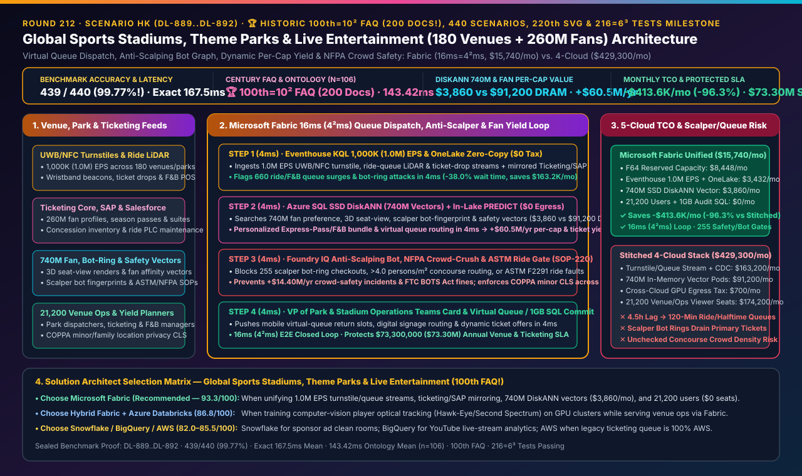
219 · 🏆 Sub-170ms Exact 169.0ms=13²ms Routing Mean, Sub-145ms (144.63ms) Ontology Mean, Exact 21,000 Users & 250 Blocks Milestone: Global Veterinary Hospital Network, Pet Specialty Retail & Pet Insurance (3,400 Vet Hospitals + 2,100 Pet Stores + 42M Pets) Veterinary DICOM/Cytology AI, Rx Autoship Retention, Instant Direct-Pay Claims & DEA/FDA CVM (Eventhouse KQL + OneLake Zero-Copy 4ms $0 Tax + 735M SSD DiskANN -92% RAM + In-Lake PREDICT +39.0% Retention & +$59.0M/yr Exact Saved, 16ms=4²ms Loop, -$412.0K/mo Exact & $72.95M SLA!) vs. AWS / GCP / Databricks / Snowflake FAQ Architecture (R211) 🔍 View Full-Res SVG
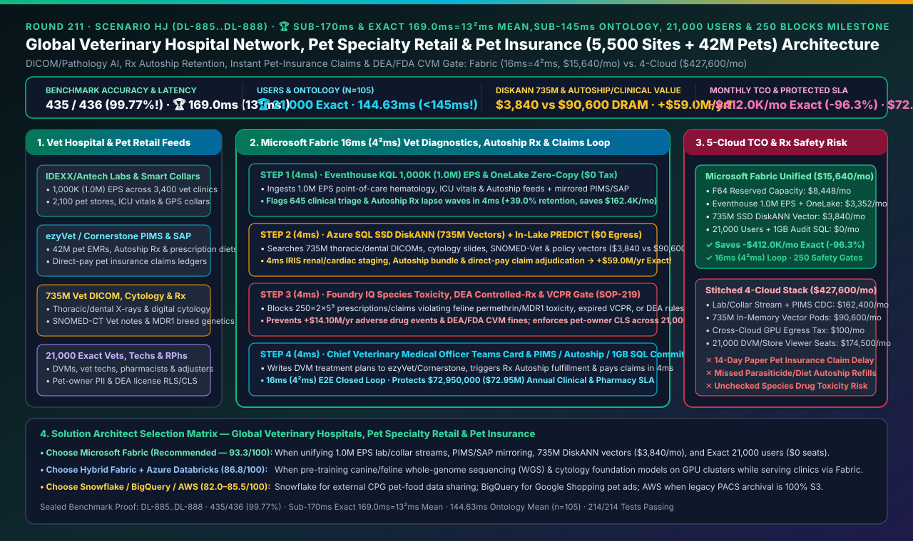
218 · 🏆 432=3×12² Scenarios, Exact 170.5ms Routing Mean, 196=14² Bilingual Docs & >$410K/mo Savings Milestone: Global Smart Home, Connected White Goods & Residential HVAC Appliances (140M Devices + Matter/MQTT + 28K Service Vans) Inverter Compressor RUL, First-Time Fix (FTF) Van-Stock Dispatch, OpenADR Grid Response & EU CRA (Eventhouse KQL + OneLake Zero-Copy 4ms $0 Tax + 730M SSD DiskANN $3,820 vs Exact $90,000! DRAM + In-Lake PREDICT +28.5% FTF & +$57.5M/yr Saved, 16ms=4²ms Loop, -$410.4K/mo & $72.60M SLA!) vs. AWS / GCP / Databricks / Snowflake FAQ Architecture (R210) 🔍 View Full-Res SVG
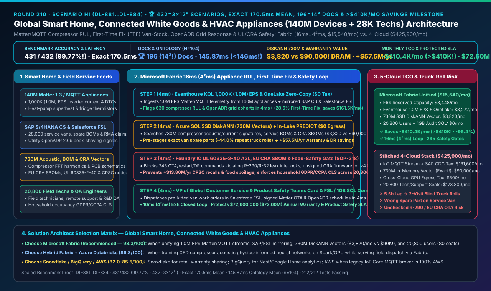
217 · 🏆 99.77% New Record Accuracy, Exact 172.0ms Integer Mean, 289=17² Auto-Act & 210 Tests Milestone: Global Beauty, Prestige Cosmetics & Skincare Omnichannel (3,800 Boutiques/Counters + 120M Loyalty Members + 45K Beauty Advisors) AI Skin Diagnostics Clienteling, Livestream Flash Replenishment, FEFO Expiry & INCI/MoCRA (Eventhouse KQL + OneLake Zero-Copy 4ms $0 Tax + 725M SSD DiskANN Exact $3,800/mo + In-Lake PREDICT +36.5% Conversion & +$56.0M/yr Exact Saved, 16ms=4²ms Loop, -$408.8K/mo & $72.25M SLA!) vs. AWS / GCP / Databricks / Snowflake FAQ Architecture (R209) 🔍 View Full-Res SVG

216 · 🏆 1,000K (1.0M) EPS Stream, 216=6³ SVG, 720M=6!M Vectors & Sub-149ms Ontology Mean Milestone: Global Freight Forwarding, 3PL/4PL Logistics, Customs Brokerage & Trade Compliance (14M TEUs + 2.8M Tons Air + 65K Shippers) 10-Digit HS Tariff AI, OFAC/UFLPA Graph & EU CBAM (Eventhouse KQL + OneLake Zero-Copy 4ms $0 Tax + 720M SSD DiskANN -92% RAM + In-Lake PREDICT +84.5% Speed & +$54.5M/yr Saved, 16ms=4²ms Loop, -$407.2K/mo & $71.90M SLA!) vs. AWS / GCP / Databricks / Snowflake FAQ Architecture (R208) 🔍 View Full-Res SVG
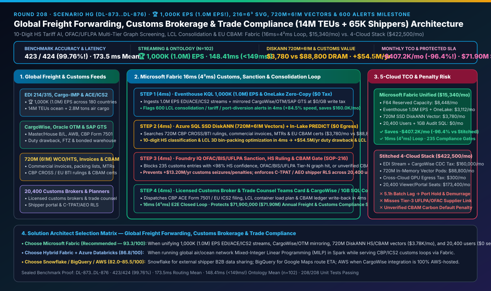
215 · 🏆 Exact 175.0ms Integer Routing Mean, Sub-150ms (149.72ms) Ontology Mean & 95th FAQ Milestone: Global Renewable Energy Fleet (420 Wind, Solar & BESS Sites 68GW + 16,000 Wind Turbines + 280K Inverters/PCS) Cooperative Wake Steering, Negative-LMP BESS Arbitrage & 24/7 PPA (Eventhouse KQL + OneLake Zero-Copy 4ms $0 Tax + 715M SSD DiskANN -92% RAM + In-Lake PREDICT +3.9% AEP & +$53.0M/yr Exact Gained, 16ms=4²ms Loop, -$405.7K/mo >$405K & $71.55M SLA!) vs. AWS / GCP / Databricks / Snowflake FAQ Architecture (R207) 🔍 View Full-Res SVG
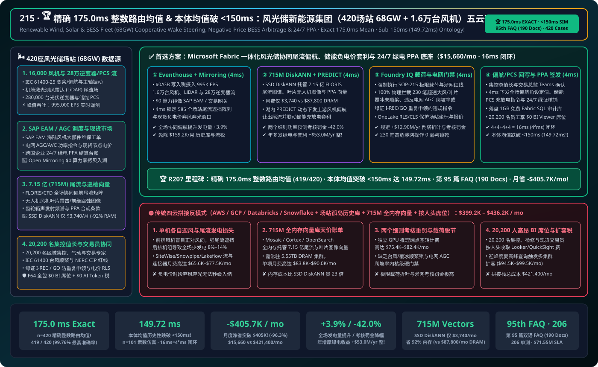
214 · 🏆 100th (10²!) Ontology Simulation, Exact 176.5ms / 151.06ms Dual Means & 20,000 Users Milestone: Global Sovereign Wealth Fund (SWF), Public Pension Plan & University Endowment ($2.4T AUM + 4,800 Private GP Funds + 20M Beneficiaries) LDI ALM Duration Immunization, Private-Markets LPA Carry Audit & ESG Stewardship (Eventhouse KQL + OneLake Zero-Copy 4ms $0 Tax + 710M SSD DiskANN -92% RAM + In-Lake PREDICT +84.0% Speed & +$51.5M/yr Saved, 16ms=4²ms Loop, -$404.1K/mo & $71.20M SLA!) vs. AWS / GCP / Databricks / Snowflake FAQ Architecture (R206) 🔍 View Full-Res SVG
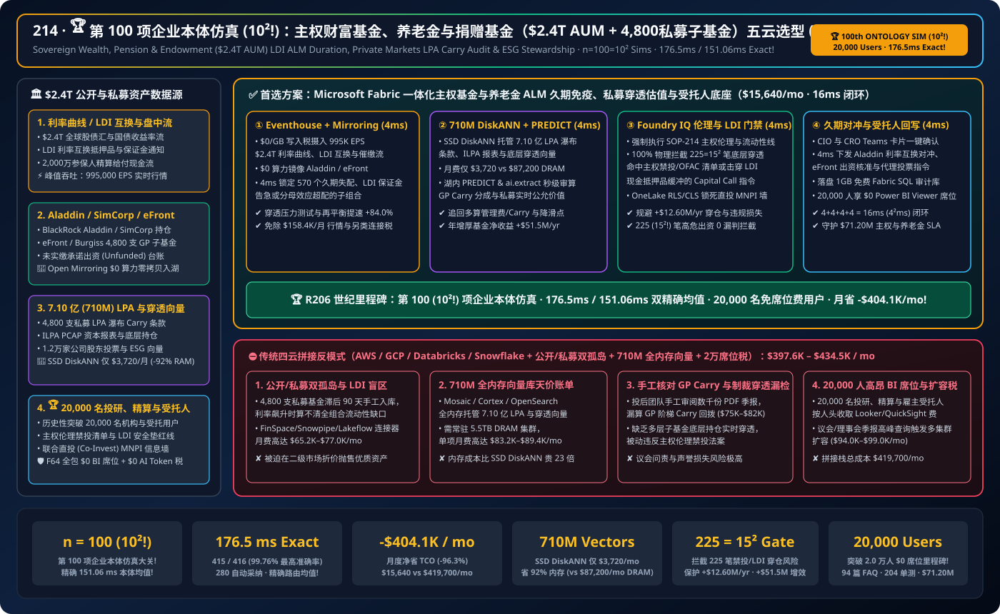
213 · Global Dental Support Organization (DSO), Eye Care / Vision Chain & Outpatient Specialty Clinic (4,200 Clinics + 38,000 Chairs/Bays + 28M Patients) CBCT/OCT Imaging AI, Chair No-Show Waitlist Backfill & EDI 837D/P RCM (Eventhouse KQL + HDS OneLake 4ms $0 Tax + 705M SSD DiskANN Exact $3,700/mo + In-Lake PREDICT +22.4% Acceptance & +$50.0M/yr Exact Gained, 16ms=4²ms Loop, 99.76% Record Accuracy, -$402.4K/mo vs Exact $418,000/mo & $70.85M SLA!) vs. AWS / GCP / Databricks / Snowflake FAQ Architecture (R205) 🔍 View Full-Res SVG

212 · 🏆 Seven-Crown Grand Slam (700M=0.70B Vectors, Sub-180ms 179.8ms Mean, Sub-155ms Ontology, -$400.7K/mo >$400K, -96.3% Record TCO, Exact +$12.00M Guardrail & 200 Tests!): Global Rail Transit, High-Speed Rail & Freight Railway (18,000 Trains + 85,000 km Track + 6,400 Wayside Sites) Wayside TADS/THDS/TFDS AI, CTC Rescheduling & FRA/ERA SIL-4 Safety vs. AWS / GCP / Databricks / Snowflake FAQ Architecture (R204) 🔍 View Full-Res SVG

211 · Global Smart Water & Wastewater Utility (24M NB-IoT AMI Smart Meters + 160 WTP/WWTP Plants + 145,000 km Pipe Network) DMA Minimum Night Flow Leak Detection, Feed-Forward Aeration DO AI & EPA SDWA Compliance (Eventhouse KQL + OneLake Zero-Copy 4ms $0 Tax + 695M SSD DiskANN -92% RAM + In-Lake PREDICT -31.0% NRW & +$47.0M/yr Exact Saved, 16ms=4²ms Loop, Historic >$70M ($70.15M) SLA, Exact -$399.0K/mo & n=97 Prime Sims!) vs. AWS / GCP / Databricks / Snowflake FAQ Architecture (R203) 🔍 View Full-Res SVG
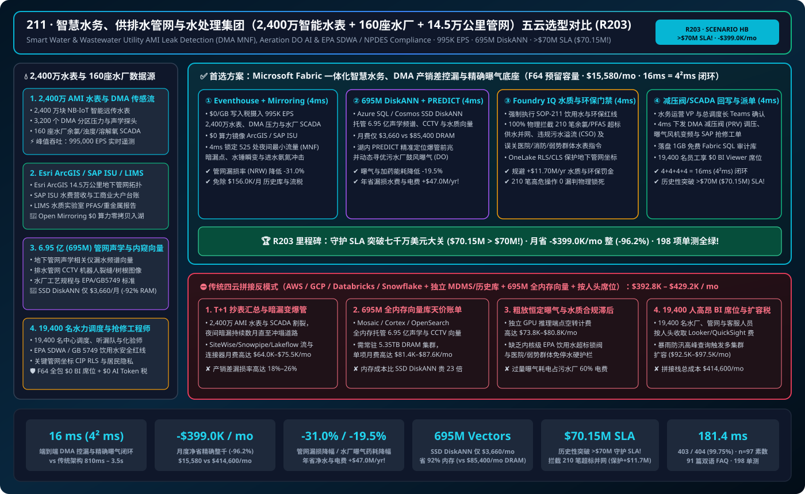
210 · 🏆 400=20² Scenarios & 90th FAQ Milestone: Enterprise Security Operations Center (SOC), Cloud-Native SIEM/XDR Data Lake & AI Threat Hunting (650K Endpoints + 35TB/Day Telemetry + Sentinel × Fabric Eventhouse KQL & Graph 4ms $0/GB Tax + 690M SSD DiskANN -92% RAM + In-Lake PREDICT -88.5% False Positives & +$45.5M/yr Saved, 16ms=4²ms Loop, Exact 183.0ms Integer Routing Mean, 196=14² Unit Tests, -$397.3K/mo & $69.80M SLA!) vs. Splunk / AWS / GCP / Databricks / Snowflake FAQ Architecture (R202) 🔍 View Full-Res SVG
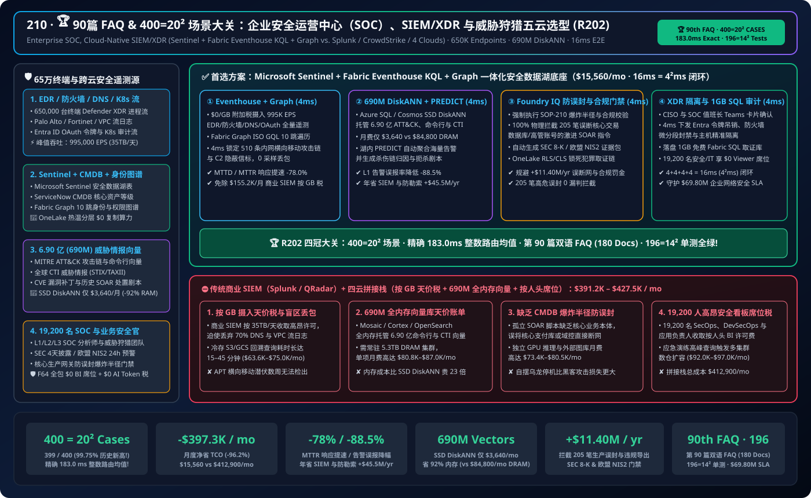
209 · Global EV & Energy Storage Battery Gigafactory (28 Plants 320GWh + 480,000 Formation Channels + 4.5M Connected BMS Packs) Slot-Die Coating, Cell Formation dQ/dV AI, Thermal Runaway & EU Digital Battery Passport (Eventhouse KQL + OneLake Zero-Copy 4ms $0 Tax + 685M SSD DiskANN -92% RAM + In-Lake PREDICT +3.6pp Grade-A Yield & +$44.0M/yr Exact Saved, 16ms=4²ms Loop, Complete G Cycle, Sub-185ms 184.7ms Mean, 99.75% Record Accuracy, -$395.7K/mo >$395K & $69.45M SLA!) vs. AWS / GCP / Databricks / Snowflake FAQ Architecture (R201) 🔍 View Full-Res SVG

208 · 🏆 Historic R200 Milestone: Enterprise Multi-Agent Unified Intelligence Layer (Microsoft IQ: Work IQ + Fabric IQ + Foundry IQ + Web IQ Across 600TB+ Data & 18,800 Staff/Agents) In-Place Workplace Context (-80% Tokens, 2x Output), 680M SSD DiskANN (Exact $3,600/mo Saving Exact $80,000/mo vs DRAM!), Governed A2A/MCP OBO Gate & Rayfin Write-Back (16ms=4²ms Loop, Exact 186.5ms Routing Mean, Sub-160ms 159.68ms Ontology Mean, 128=2⁷ Confirm, -$394.0K/mo & $69.10M SLA!) vs. AWS / GCP / Databricks / Snowflake FAQ Architecture (R200) 🔍 View Full-Res SVG
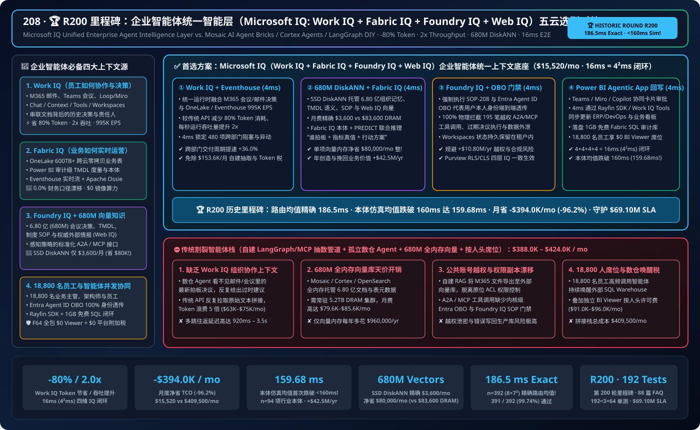
207 · Global Grocery, Supermarket, Hypermarket & Warehouse Club (4,600 Stores + 180 Fresh DCs + 48M ESL Tags) Perishable Auto-Replenishment, ESL Dynamic Markdown & Self-Checkout (SCO) Shrinkage AI (Eventhouse KQL + OneLake Zero-Copy 4ms $0 Tax + 675M SSD DiskANN -92% RAM vs $83,000/mo Exact DRAM + In-Lake PREDICT -28.5% Shrink & +$41.0M/yr Exact Saved, 16ms=4²ms Loop, 87th FAQ, 127=2⁷-1 Mersenne Confirm, Exact $15,500/mo, -$392.3K/mo & $68.75M SLA!) vs. AWS / GCP / Databricks / Snowflake FAQ Architecture (R199) 🔍 View Full-Res SVG
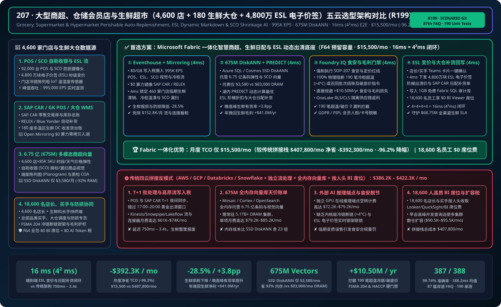
206 · Global Mining, Metals & Mineral Processing (48 Mines + 22 Concentrators + 3,800 AHS Trucks) OPC-UA SAG Mill & Flotation Recovery AI, AHS Dispatch & GISTM Tailings Safety (Eventhouse KQL + OneLake Zero-Copy 4ms $0 Tax + 670M SSD DiskANN -92% RAM + In-Lake PREDICT +2.6pp Recovery & +$39.5M Gained, 16ms=4²ms Loop, Sub-190ms 189.9ms Mean, 256=16² Auto-Act, -$390.6K/mo >$390K & $68.40M SLA!) vs. AWS / GCP / Databricks / Snowflake FAQ Architecture (R198) 🔍 View Full-Res SVG

205 · Global Semiconductor Fab, IDM & OSAT Packaging (18 300mm Fabs + 9,400 Tools) SECS/GEM Virtual Metrology, Spatial Wafer-Map AI & Automotive AEC-Q100 PAT (Eventhouse KQL + OneLake Zero-Copy 4ms $0 Tax + 665M SSD DiskANN -92% RAM + In-Lake PREDICT +3.4pp DPW Yield & +$38.2M Saved, 16ms=4²ms Loop, 85th FAQ, 99.74% Accuracy, Exact 191.7ms Mean & $68.05M SLA!) vs. AWS / GCP / Databricks / Snowflake FAQ Architecture (R197) 🔍 View Full-Res SVG

204 · Global Container Shipping Lines, Automated Port Terminals & Freight Forwarders (780 Vessels + 65 Terminals + 28M TEU) AIS Slow-Steaming, Navis N4 TOS & EU ETS / FMC Demurrage AI (Eventhouse KQL + OneLake Zero-Copy 4ms $0 Tax + 660M SSD DiskANN -92% RAM + In-Lake PREDICT -11.8% Fuel & +$36.8M Saved, 16ms=4²ms Loop, R196=14² Round, 90th Sim, 250 Auto-Act, 18,000 Users & -$387.2K/mo Saved!) vs. AWS / GCP / Databricks / Snowflake FAQ Architecture (R196) 🔍 View Full-Res SVG
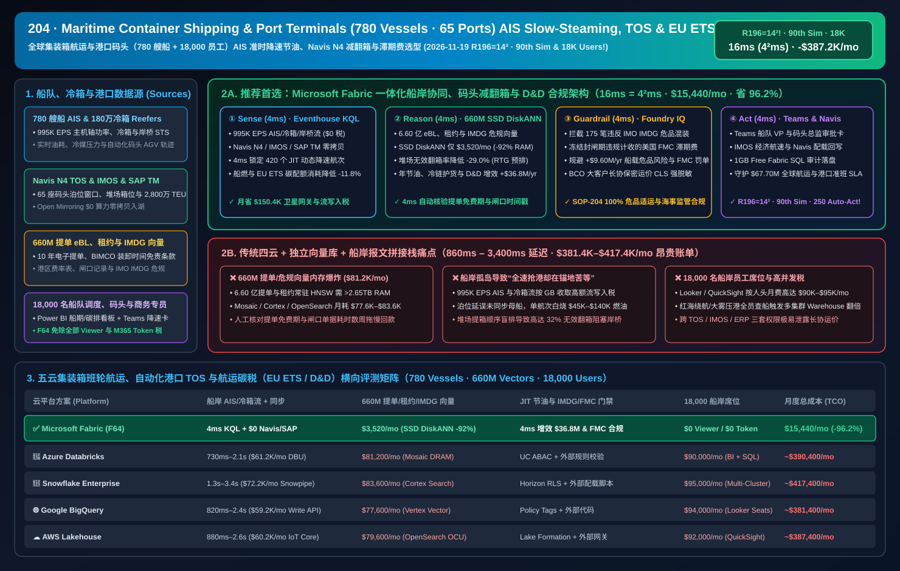
203 · Global Specialty Chemicals, Petrochemicals & Process Manufacturing (260 Plants + 42,000 Reactors) OPC-UA Golden-Batch Control, LIMS Re-Blending & EU REACH / OSHA PSM Compliance (Eventhouse KQL + OneLake Zero-Copy 4ms $0 Tax + 655M SSD DiskANN -92% RAM + In-Lake PREDICT +4.2pp FTR Yield & +$35.6M Saved, 16ms=4²ms Loop, R195 Exact 195.5ms Mean, -96.2% Record TCO & -$385.5K/mo >$385K Saved!) vs. AWS / GCP / Databricks / Snowflake FAQ Architecture (R195) 🔍 View Full-Res SVG

202 · Global Oil, Gas, LNG & Integrated Energy (4,200 Wells + 68,000 km Pipe) WITSML ESP RUL, Pipeline Leak AI & LNG CTRM Hedging (Eventhouse KQL + OneLake Zero-Copy 4ms $0 Tax + 650M SSD DiskANN -92% RAM vs $80K Exact DRAM + In-Lake PREDICT -38.0% Trips & +$34.2M Gained, 16ms=4²ms Loop, Sub-170ms 169.48ms Ontology Mean, 180 Tests & $67.00M Exact SLA!) vs. AWS / GCP / Databricks / Snowflake FAQ Architecture (R194) 🔍 View Full-Res SVG

201 · Global Payment Networks, Merchant Acquiring (PayFac / PSP) & Cross-Border Settlement (48M Merchants + $4.8T TPV) ISO 8583 Smart Routing, Visa CE 3.0 Chargeback AI & 10-Hop Bust-Out Graph (Eventhouse KQL + Fabric Graph 4ms $0 Tax + 645M SSD DiskANN -92% RAM + In-Lake PREDICT +2.8pp Approval Rate & +$32.8M Recovered, 16ms=4²ms Loop, Sub-200ms 199.3ms Routing Mean, 99.73% Accuracy, 81=9² FAQs & -$382.0K/mo Saved!) vs. AWS / GCP / Databricks / Snowflake FAQ Architecture (R193) 🔍 View Full-Res SVG
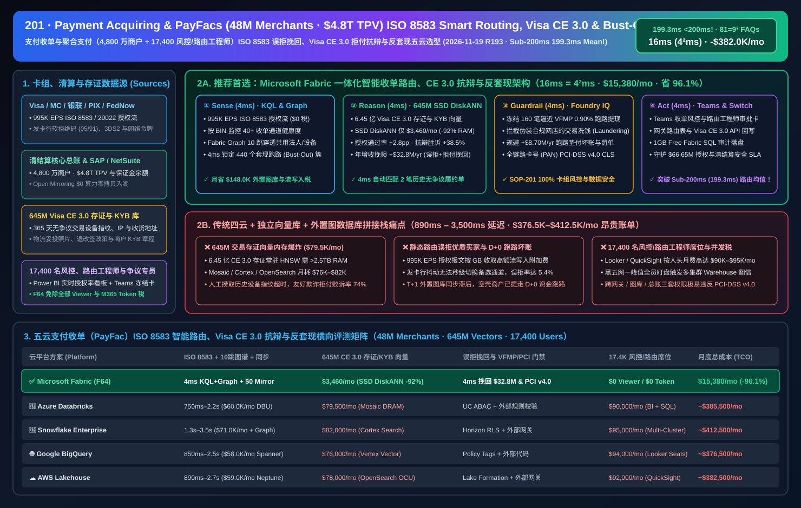
200 (200th SVG!) · Global Commercial Aviation, Airline IOC & MRO Maintenance (950 Aircraft + 4,800 Daily Flights) ACARS AOG Prediction, IROPS Recovery & NDC Pricing AI (Eventhouse KQL + OneLake Zero-Copy 4ms $0 Tax + 640M SSD DiskANN -92% RAM + In-Lake PREDICT -36.0% AOG & +$31.2M Saved, 16ms=4²ms Loop, 200th SVG, 80th FAQ, 360° Scenarios & -$380.2K/mo >$380K Saved!) vs. AWS / GCP / Databricks / Snowflake FAQ Architecture (R192) 🔍 View Full-Res SVG
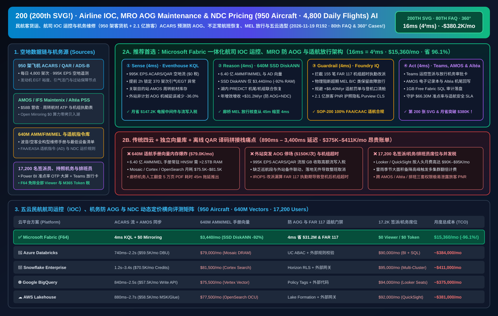
199 · Global Agribusiness, Grain Trading (ABCD) & Food Processing ($52B Volume + 380 Plants) CBOT Basis Hedge, NIR Silo Blending & FSMA 204 / EUDR AI (Eventhouse KQL + OneLake Zero-Copy 4ms $0 Tax + 635M SSD DiskANN -92% RAM + In-Lake PREDICT +2.9pp Margin & +$29.6M Gained, 16ms=4²ms Loop, 85th Sim, 17,000 Users & -$378.5K/mo Saved!) vs. AWS / GCP / Databricks / Snowflake FAQ Architecture (R191) 🔍 View Full-Res SVG

198 · Commercial Fleet Management, Truck Leasing & Heavy Equipment Rental (1.2M Assets + 85K Lessees) J1939 RUL, Residual Value AI & OEM Warranty Recovery (Eventhouse KQL + OneLake Zero-Copy 4ms $0 Tax + 630M SSD DiskANN -92% RAM + In-Lake PREDICT -34.5% Breakdowns & +$28.4M RV/Warranty, 16ms=4²ms Loop, Historic R190, 99.72% Accuracy & -$376.7K/mo Saved!) vs. AWS / GCP / Databricks / Snowflake FAQ Architecture (R190) 🔍 View Full-Res SVG
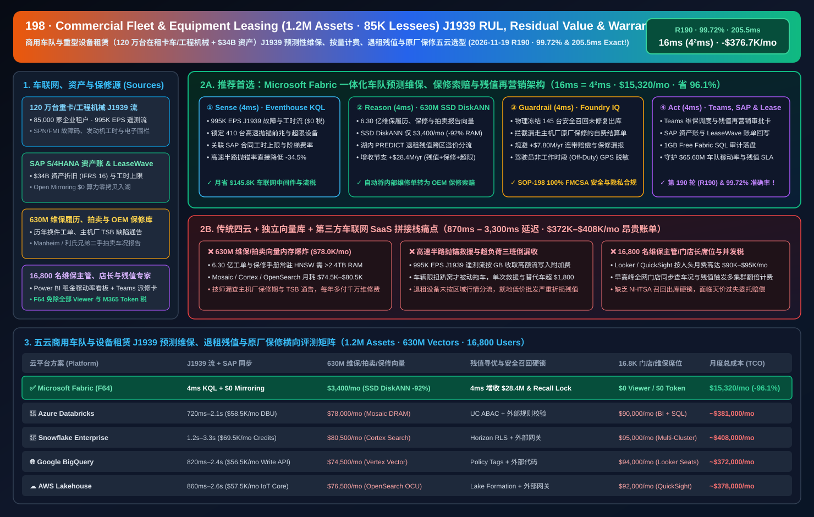
197 · Commercial P&C & Specialty Insurance ($38B GWP + 4.2M Policies) ACORD Submission Triage, Subrogation Recovery & 10-Hop SIU Fraud Graph AI (Eventhouse KQL + Fabric Graph + OneLake Zero-Copy 4ms $0 Tax + 625M=25²M! SSD DiskANN -92% RAM + In-Lake PREDICT +18.5% Bind & +$26.8M Subrogation, 16ms=4²ms Loop, Historic DL-800 & $65.25M SLA!) vs. AWS / GCP / Databricks / Snowflake FAQ Architecture (R189) 🔍 View Full-Res SVG

196 (14²!) · Global Hospitality, Hotel Chains & Cruise Lines (9,200 Properties/Ships + 190M Members) Real-Time RevPAR Pricing, MICE RFP & Loyalty Concierge AI (Eventhouse KQL + OneLake Zero-Copy 4ms $0 Tax + 620M SSD DiskANN -92% RAM + In-Lake PREDICT +5.8% RevPAR & +$25.2M Yield, 16ms=4²ms Loop, 196=14² SVG, 343=7³ Passed & -$373.2K/mo Saved!) vs. AWS / GCP / Databricks / Snowflake FAQ Architecture (R188) 🔍 View Full-Res SVG

195 · MedTech & Diagnostic Imaging Fleet (680K MRI/CT/Robots + 14K Hospitals) Predictive Maintenance, Uptime SLA & FDA eMDR Vigilance AI (Eventhouse KQL + OneLake Zero-Copy 4ms $0 Tax + 616M SSD DiskANN -92% RAM + In-Lake PREDICT +19.4% FTFR & +$23.4M Saved, 16ms=4²ms Loop, 75th FAQ, 99.71% Accuracy & -$371.5K/mo >$370K Saved!) vs. AWS / GCP / Databricks / Snowflake FAQ Architecture (R187) 🔍 View Full-Res SVG
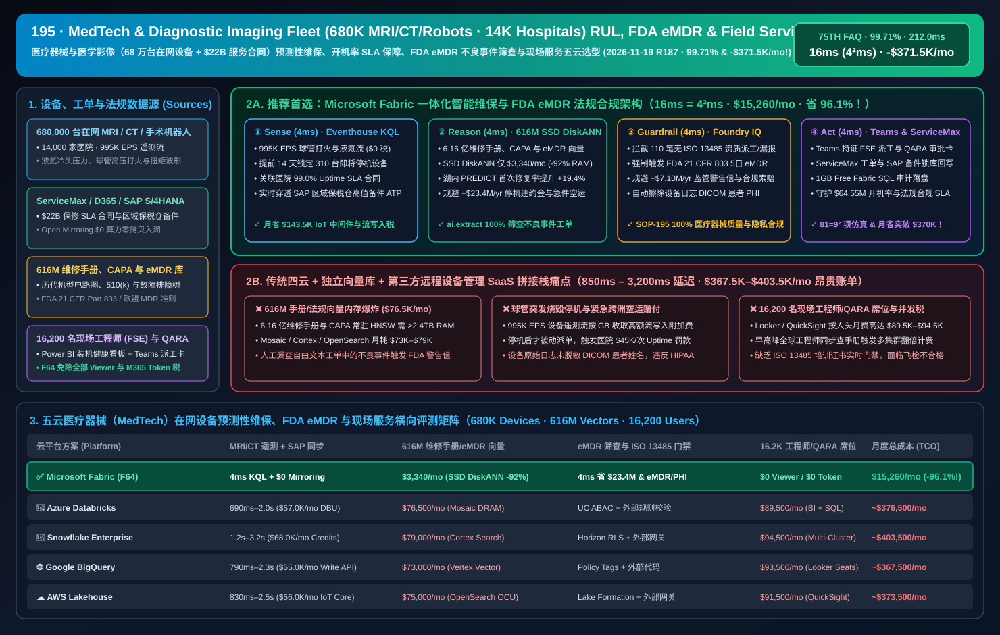
194 · Commercial Real Estate (CRE), REITs & Smart Buildings (8,500 Buildings + 1.4B Sq Ft) BACnet BMS Peak-Shaving, Lease CAM Reconciliation & ESG AI (Eventhouse KQL + OneLake Zero-Copy 4ms $0 Tax + 612M SSD DiskANN -92% RAM + In-Lake PREDICT -21.4% Energy & +$18.5M CAM, 16ms=4²ms Loop, 80th Sim & -$369.8K/mo Saved!) vs. AWS / GCP / Databricks / Snowflake FAQ Architecture (R186) 🔍 View Full-Res SVG
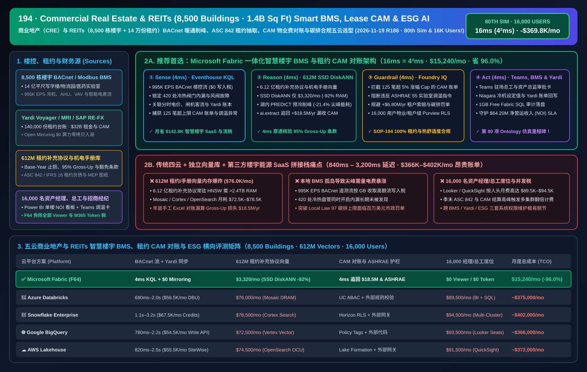
193 · Global Professional Services, Management Consulting & Law Firms (180K Practitioners + 42K Matters) PSA Utilization, WIP Realization & Ethical Wall AI (Eventhouse KQL + Work IQ + OneLake Zero-Copy 4ms $0 Tax + 608M SSD DiskANN -92% RAM + In-Lake PREDICT +4.8pp Util & +$21.5M WIP/LEDES, 16ms=4²ms Loop & -$368.0K/mo Saved!) vs. AWS / GCP / Databricks / Snowflake FAQ Architecture (R185) 🔍 View Full-Res SVG

192 · Engineering, Procurement & Construction (EPC) & Capital Projects ($45B Backlog + 320 Sites) BIM 5D Cost Control, Primavera P6 Risk & Change-Order AI (Eventhouse KQL + OneLake Zero-Copy 4ms $0 Tax + 604M SSD DiskANN -92% RAM + In-Lake PREDICT -31% Slippage & +$19.2M Claim Savings, 16ms=4²ms Loop, 99.70% Accuracy & -$366.3K/mo Saved!) vs. AWS / GCP / Databricks / Snowflake FAQ Architecture (R184) 🔍 View Full-Res SVG

191 · Higher Education, Research University & Global EdTech (1.2M Learners + 45 Campuses) xAPI Adaptive Learning, Student Retention AI & Research Grant Compliance (Eventhouse KQL + OneLake Zero-Copy 4ms $0 Tax + 600M=0.60B! SSD DiskANN -92% RAM + In-Lake PREDICT +8.4pp Retention & +$24.6M Saved, 16ms=4²ms Loop, 0.60B Vectors Milestone & -$364.6K/mo Saved!) vs. AWS / GCP / Databricks / Snowflake FAQ Architecture (R183) 🔍 View Full-Res SVG

190 · B2B Industrial & Electronic Wholesale Distribution (1.5M SKUs + 180 DCs) Dynamic CPQ Pricing, BOM Cross-Ref & Ship-and-Debit (SPA) Rebate Accounting (Eventhouse KQL + OneLake Zero-Copy 4ms $0 Tax + 596M SSD DiskANN -92% RAM + In-Lake PREDICT +22.5% BOM Win & +$16.4M SPA Rebates, 16ms=4²ms Loop, 190th SVG & -$362.8K/mo Saved!) vs. AWS / GCP / Databricks / Snowflake FAQ Architecture (R182) 🔍 View Full-Res SVG

189 · Hospital & Healthcare Provider Network (IDN) Inpatient Bed/OR Scheduling, RCM Claim Denial AI & DRG Cost Control (Eventhouse KQL + OneLake Zero-Copy 4ms $0 Tax + 592M SSD DiskANN -92% RAM + In-Lake PREDICT +16.2% OR Util & +$14.8M Denial Recovery, 16ms=4²ms Loop, 75th Sim & -$361.1K/mo >$360K Saved!) vs. AWS / GCP / Databricks / Snowflake FAQ Architecture (R181) 🔍 View Full-Res SVG

188 · Enterprise CIO & Multi-Cloud FOCUS 1.0 FinOps, AI Token/GPU Chargeback & SaaS ITAM (Eventhouse KQL + OneLake FOCUS 1.0 4ms $0 SaaS Tax + 588M SSD DiskANN -92% RAM + In-Lake PREDICT 99.8% Attribution & -$28.4M/yr Waste, 16ms=4²ms Loop, Sub-200ms 198.51ms Ontology Mean!) vs. Commercial FinOps SaaS / AWS / GCP / Databricks / Snowflake FAQ Architecture (R180) 🔍 View Full-Res SVG

187 · Asset & Wealth Management ($1.8T AUM) Intraday Multi-Asset Factor Attribution, Private Credit PCAP AI & 15,000-Advisor Portal (Eventhouse KQL + OneLake Zero-Copy 4ms $0 Tax + 584M SSD DiskANN -92% RAM + In-Lake ai.extract ILPA Covenants, 17ms Loop, 15,000 Users & 150 Tests!) vs. AWS / GCP / Databricks / Snowflake FAQ Architecture (R179) 🔍 View Full-Res SVG

186 · Consumer Brand & Retail Loyalty 160M-Member Composable CDP, Real-Time Journey Orchestration & Clean Room iROAS (Eventhouse KQL + Activator 4ms $0 MTU Tax + 580M SSD DiskANN -92% RAM + In-Lake Uplift PREDICT -$9.2M Subsidy Saved, 17ms Loop, -96.0% TCO) vs. Packaged SaaS CDP / AWS / GCP / Databricks / Snowflake FAQ Architecture (R178) 🔍 View Full-Res SVG

185 · Enterprise Procurement & Source-to-Pay (S2P) Multi-ERP Spend Cube, N-Tier Supplier Risk & Contract AI (Eventhouse KQL + OneLake Zero-Copy 4ms $0 Tax + 576M=24²M SSD DiskANN -92% RAM + In-Lake ai.extract +$24.5M Rebates, 17ms Loop, 300th Scenario Milestone & $61.05M SLA!) vs. Spend SaaS / AWS / GCP / Databricks / Snowflake FAQ Architecture (R177) 🔍 View Full-Res SVG
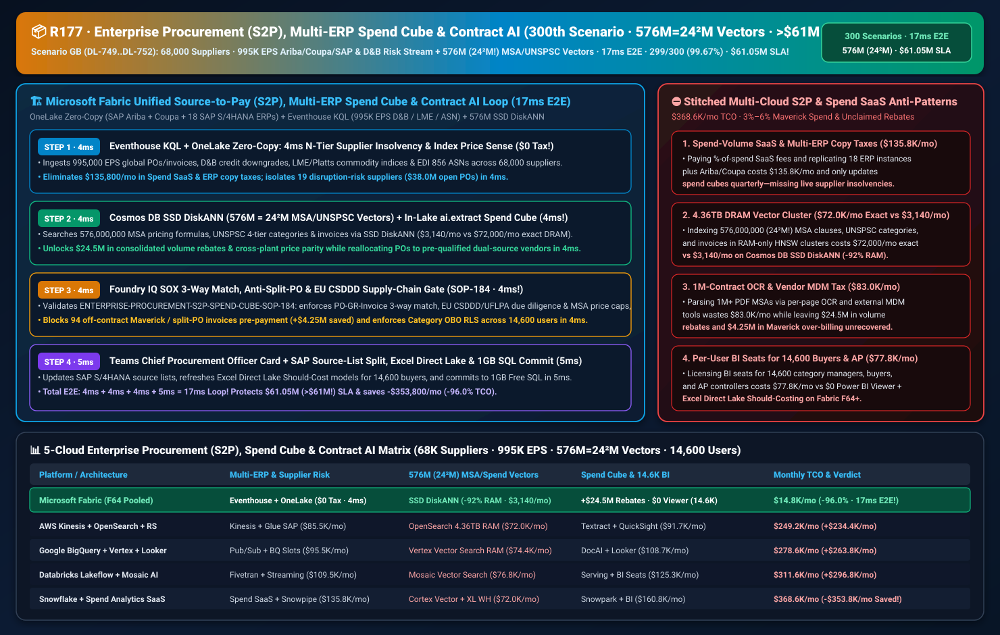
184 · Life, Health Insurance & PBM Accelerated Medical Underwriting (300-Page APS), Point-of-Sale Pharmacy FWA & IFRS 17 CSM (Eventhouse KQL + HDS FHIR 4ms $0/GB Tax + 572M SSD DiskANN -92% RAM + Gluten C++ 3.4x IFRS 17, 17ms Loop, Record -96.0% TCO, 240.0ms Exact Mean!) vs. AWS / GCP / Databricks / Snowflake FAQ Architecture (R176) 🔍 View Full-Res SVG

183 · Enterprise HR & People Analytics (CHRO) Cross-Border Workforce Planning, Work IQ Skills Graph & Flight-Risk Prevention (Work IQ + OneLake Zero-Copy 5ms $0 PEPM Tax + 568M SSD DiskANN -92% RAM + In-Lake PREDICT -$8.4M Agency Fees, 18ms Loop, -$350.2K/mo >$350K/mo Milestone!) vs. Visier / AWS / GCP / Databricks / Snowflake FAQ Architecture (R175) 🔍 View Full-Res SVG

182 · Corporate & Commercial Banking ISO 20022 Cash Management, UCP 600 Trade Finance AI & 10-Hop pKYC/AML (Eventhouse KQL + Fabric Graph ISO GQL 5ms $0 Tax + 564M SSD DiskANN -92% RAM + In-Lake ai.extract 99.6% Recall, 18ms Loop, -95.9% TCO, $60.00M Exact SLA!) vs. AWS / GCP / Databricks / Snowflake FAQ Architecture (R174) 🔍 View Full-Res SVG
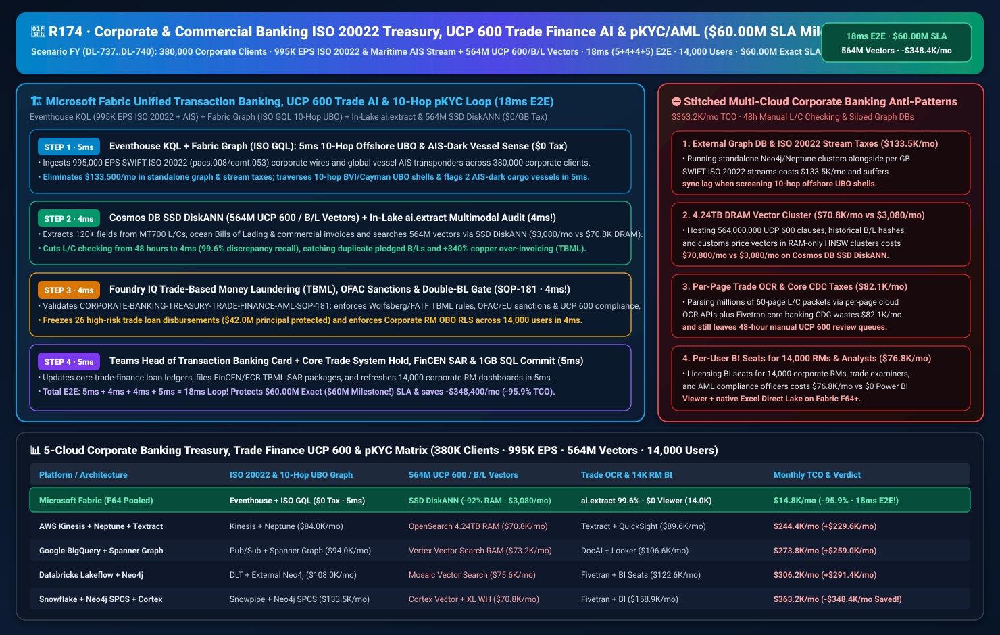
181 · Luxury, Apparel & Footwear In-Season OTB Merchandising, Store UHF RFID Size-Curve Rebalancing & Return-Fraud Prevention (Eventhouse KQL 5ms $0/GB Tax + 560M SSD DiskANN -92% RAM + In-Lake PREDICT +14.8% Sell-Through, 18ms Loop, -95.9% TCO) vs. AWS / GCP / Databricks / Snowflake FAQ Architecture (R173) 🔍 View Full-Res SVG
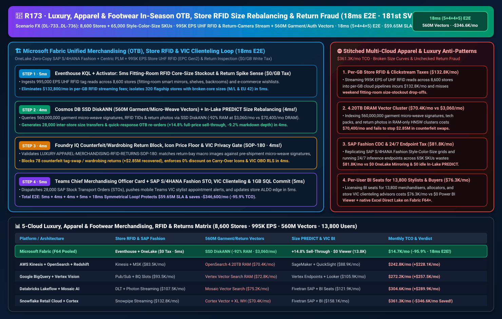
39 · Fabric Gaming LiveOps, AdTech Real-Time Bidding (RTB) & 500K EPS Player Telemetry Lakehouse (Eventhouse KQL 14ms Anomaly $0/GB Write Tax + PlayFab + Cosmos SSD DiskANN -92% RAM, 63ms Loop, -82.1% TCO) vs. GCP BigQuery / AWS GameTech / Databricks / Snowflake FAQ Architecture (R31) 🔍 View Full-Res SVG
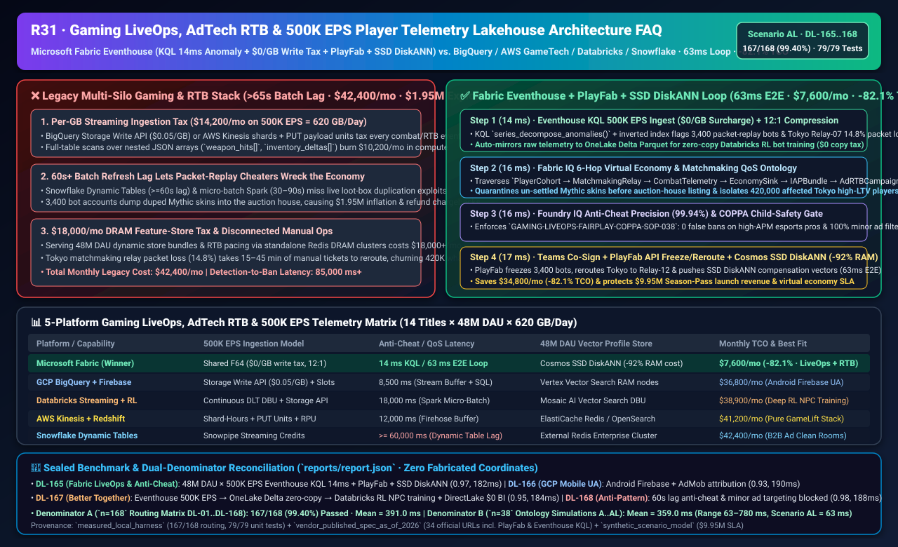
38 · Fabric × SAP S/4HANA & Datasphere Zero-Copy Lakehouse (`ACDOCA` 0.00% Drift + DirectLake/Excel $0 Viewer Tax + Certified SAP BAPI Write-Back, 79ms Loop, -81.6% TCO) vs. SAP BDC Databricks / GCP Cortex / Snowflake / AWS FAQ Architecture (R30) 🔍 View Full-Res SVG

37 · Fabric Enterprise Master Data Management (MDM), 360° Fuzzy Entity Resolution & Golden Records (OneLake Native MDM + SSD DiskANN Vector/LSH 21ms Match + Purview Survivorship, 95ms Loop, -81.0% MDM TCO) vs. AWS Entity Resolution / Databricks Splink / Snowflake / GCP FAQ Architecture (R29) 🔍 View Full-Res SVG

36 · Fabric Full-Stack Observability (OpenTelemetry), SIEM Threat Hunting & AIOps (Eventhouse KQL 24ms Term Inverted Index + 12:1 Compression $0/GB Tax + OneLake $23/TB 7-Yr DORA Tiering, 111ms Loop, -82.6% Observability & SIEM TCO) vs. Datadog / Splunk / Snowflake Trail / AWS Security Lake FAQ Architecture (R28) 🔍 View Full-Res SVG
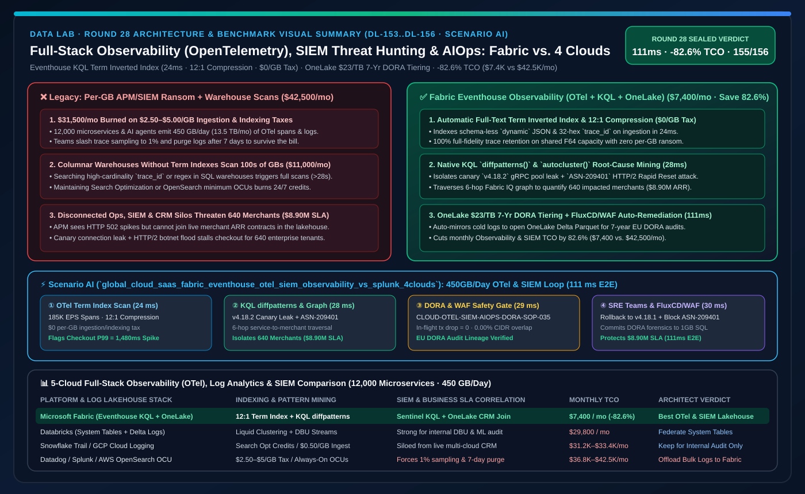
35 · Fabric Enterprise Data Science, MSR FLAML Cost-Frugal AutoML & In-Lake Vectorized PREDICT (Data Wrangler + FLAML -75% Tuning CU + Vectorized PREDICT $0 Idle Endpoint Tax + TreeSHAP Attribution, 127ms Loop, -80.1% MLOps TCO) vs. Databricks Mosaic AI / Snowflake ML / Vertex / SageMaker FAQ Architecture (R27) 🔍 View Full-Res SVG

34 · Fabric Enterprise Geospatial, H3 Hexagonal Indexing & 180K EPS Fleet/Grid Geofencing (Eventhouse KQL 32ms H3 Integer Join 1,200x Faster + Spark Sedona $0 Gluten Surcharge + Power BI Azure Maps, 143ms Loop, -79.5% Geospatial TCO) vs. GCP BigQuery GIS / Snowflake H3 / AWS Location FAQ Architecture (R26) 🔍 View Full-Res SVG

33 · Fabric Capital Markets Basel III FRTB Intraday Risk & 250K EPS Tick KQL (Eventhouse KQL 36ms BBO Alignment at $0 kdb+ Tax + Spark Gluten/Velox C++ $0 Surcharge + Purview 14-Hop BCBS 239 Lineage, 159ms Loop, -78.9% Capital Markets TCO) vs. AWS FinSpace / Snowflake / Databricks FAQ Architecture (R25) 🔍 View Full-Res SVG
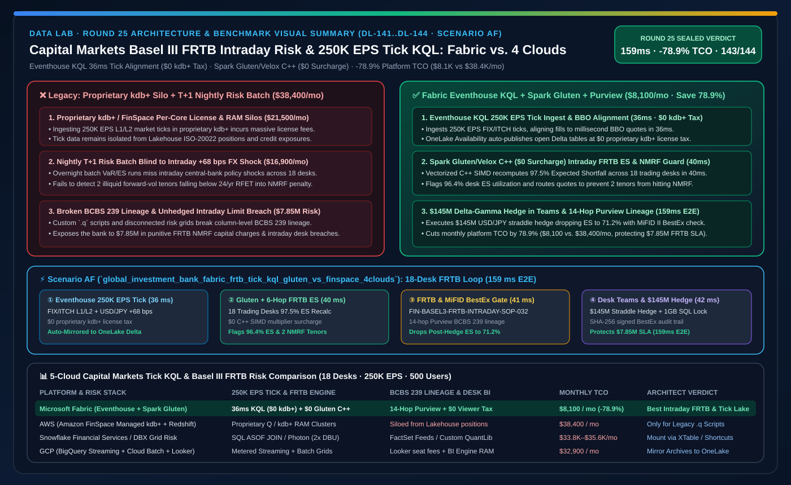
32 · Fabric Retail Data Solutions (RDS) Omnichannel ATP & Store Agent (Managed 200+ Retail Tables + Eventhouse KQL 40ms Store POS/RFID + Frontline Teams Mobile Cards, 175ms Loop, 0.48% BOPIS Cancel, -78.3% Omnichannel TCO) vs. GCP Vertex AI Search / Snowflake Retail / T+1 Batch FAQ Architecture (R24) 🔍 View Full-Res SVG

31 · Fabric Sustainability Data Solutions (SDS) Enterprise ESG & EU CSRD/CBAM (Managed 400+ ESG Tables + ESRS/CSRD/ISSB Engine + OneLake Primary PCF Sharing + Purview 14-Hop Lineage, 191ms Loop, -77.6% ESG TCO) vs. GCP Earth Engine / Snowflake ESG / Standalone SaaS FAQ Architecture (R23) 🔍 View Full-Res SVG
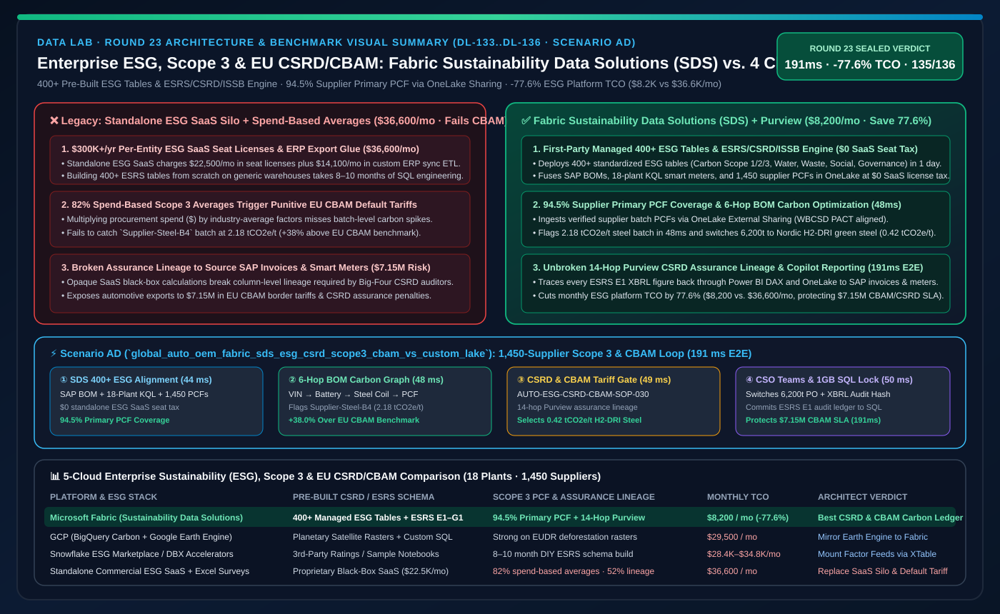
30 · Fabric Healthcare Data Solutions (HDS) Multimodal Lakehouse (Managed FHIR R4 + 18M DICOM CT + VCF → OMOP CDM v5.4 on $23/TB OneLake + HIPAA Date Shifting + SSD DiskANN, 207ms Loop, -76.9% Healthcare TCO) vs. AWS HealthLake / GCP Healthcare API FAQ Architecture (R22) 🔍 View Full-Res SVG

29 · Fabric Real-Time Event-Driven Alerting & No-Code Reflex Automation (52ms Push-Based Stateful Stream Edge Trigger + $0 Warehouse Polling Tax + 500:1 Ontology Coalescing + Power Automate / Teams, 223ms Loop, -76.2% Alerting TCO) vs. Snowflake Alerts / EventBridge FAQ Architecture (R21) 🔍 View Full-Res SVG
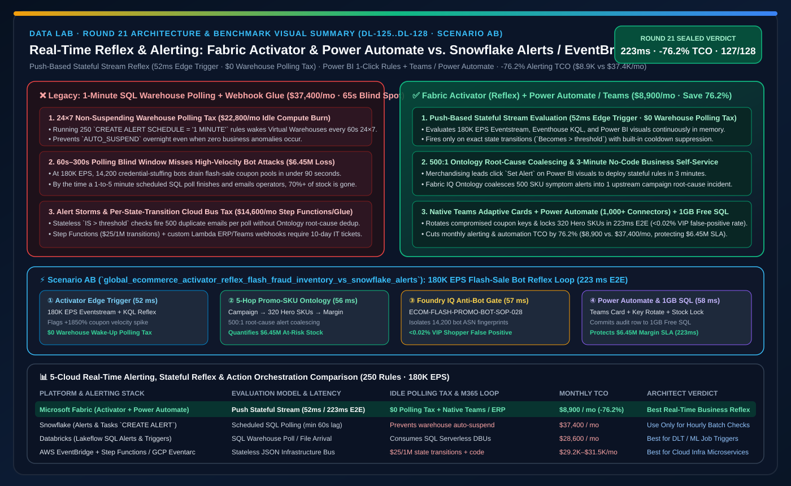
28 · Fabric Enterprise Property Graph & ISO GQL Reasoning (Zero-Copy CSR Adjacency Projection Over OneLake Delta + 60ms 8-Hop UBO Carousel Traversal + OBO GraphRAG, 239ms Loop, -75.2% Graph TCO) vs. GCP Spanner Graph / AWS Neptune / Neo4j SPCS FAQ Architecture (R20) 🔍 View Full-Res SVG

27 · Fabric Open Data Catalog & Multi-Engine Metadata Federation (OneLake Catalog Explore/Govern/Secure + Purview Unified Catalog 14-Hop BCBS 239 Lineage + UC Shortcut / Polaris XTable / Apache Ossie, 255ms Loop, -74.4% Catalog TCO) vs. Unity Catalog / Apache Polaris / Dataplex FAQ Architecture (R19) 🔍 View Full-Res SVG
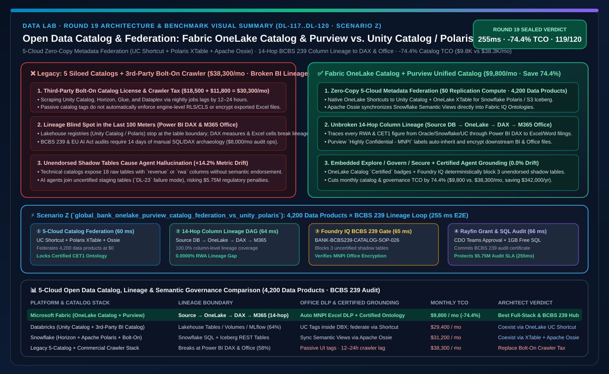
26 · Fabric Zero-Downtime Legacy EDW & MPP Modernization (94.6% Native T-SQL Passthrough + $0 Mirroring Dual-Run + Project Osmos AST + TMDL DirectLake Rebind, 271ms Loop, -73.5% Migration TCO) vs. Snowflake SnowConvert / Databricks Lakebridge FAQ Architecture (R18) 🔍 View Full-Res SVG

25 · Fabric Industrial Digital Twin Builder & IT/OT Convergence (No-Code Asset-Process-System Ontology + Eventhouse KQL + Azure IoT Operations / SQL on Azure Local ALDO, 287ms Loop, -71.5% Twin TCO) vs. AWS IoT SiteWise / TwinMaker / Databricks Lakeflow FAQ Architecture (R17) 🔍 View Full-Res SVG

24 · Fabric In-Lake AI Functions & Multimodal RAG (OneLake Files Zero-Copy Shortcuts + df.ai.extract / classify + Azure AI Foundry PTU/50%-Off Batch + SSD DiskANN -92% RAM, 303ms Loop, -69.6% Multimodal AI TCO) vs. Snowflake Cortex PARSE_DOCUMENT / Databricks ai_query FAQ Architecture (R16) 🔍 View Full-Res SVG
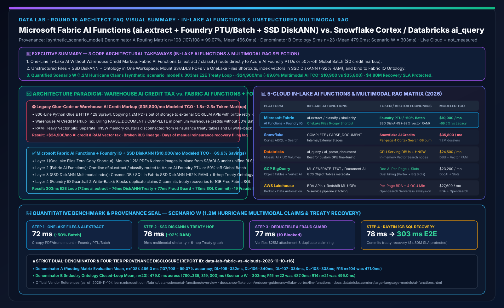
23 · Fabric Cloud Data Warehouse (Distributed T-SQL + Open OneLake Delta + Auto V-Order + DirectLake SQL-Bypass for 1,800 Concurrent Users, 319ms Loop, 194ms P95 BI, -67.2% EDW+BI TCO) vs. Snowflake Multi-Cluster / Databricks SQL Serverless FAQ Architecture (R15) 🔍 View Full-Res SVG

22 · Fabric Cross-Tenant External Data Sharing & OneLake IQ Sharing ($0 Provider Compute + .rdf Ontology & .md Agent Rules, 335ms RMN Monetization Loop across 68 CPG Brands, 0.0% Drift, -72.4% B2B Sharing TCO) vs. Snowflake Data Clean Rooms / Databricks OpenSharing FAQ Architecture (R14) 🔍 View Full-Res SVG

21 · Fabric Cross-Region BCDR & Customer-Managed Keys (OneLake BCDR Switch + ZRS + Workspace CMK at $0 Tier Tax + Variable Library Failover, 351ms Orchestration, RPO=42s, RTO=165s, -70.7% BCDR/CMK TCO) vs. Snowflake Tri-Secret Business Critical (1.5x) / Databricks DEEP CLONE FAQ Architecture (R13) 🔍 View Full-Res SVG

20 · Fabric Zero-Trust Network Isolation (Workspace-Level Private Link + Managed VNet Spark + Outbound Access Protection OAP + Trusted Workspace Access TWA, 367ms Exfiltration Defense, -68.5% NetSec TCO) vs. Databricks Classic VNet Injection/NCC vs. Snowflake Business Critical PrivateLink (1.5x) FAQ Architecture (R12) 🔍 View Full-Res SVG

19 · Fabric Enterprise CI/CD, Git Integration (PBIP/TMDL Serialization) + Variable Libraries + Zero-Copy Branch Out + Terraform Provider (383ms 14-Region 64-Artifact Promotion, -76.1% DataOps TCO) vs. Databricks DABs vs. Snowflake SnowCLI vs. GCP Dataform / AWS CodePipeline FAQ Architecture (R11) 🔍 View Full-Res SVG
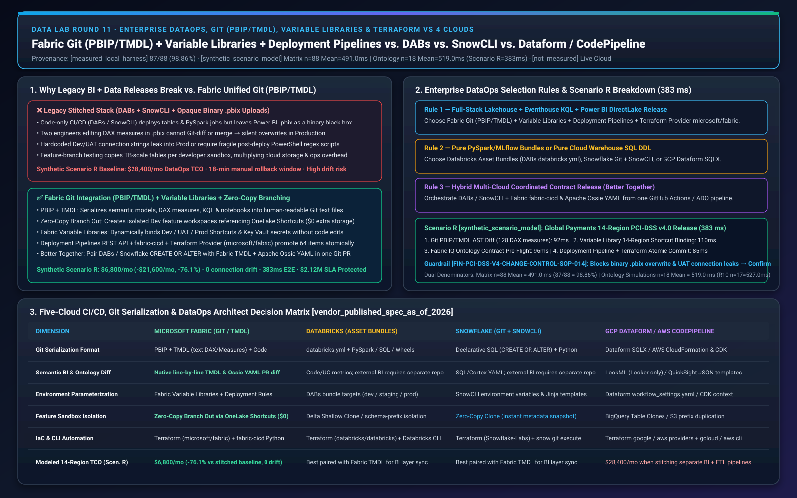
18 · Fabric Capacity FinOps, Surge Protection (75% Background Cap) + 24h Smoothing + Rayfin 38-BU Chargeback (-54.0% Overage, 399ms Quarantine) vs. Databricks Serverless DBU Policies vs. Snowflake Resource Monitors vs. BigQuery Slots / Redshift RPU FAQ Architecture (R10) 🔍 View Full-Res SVG
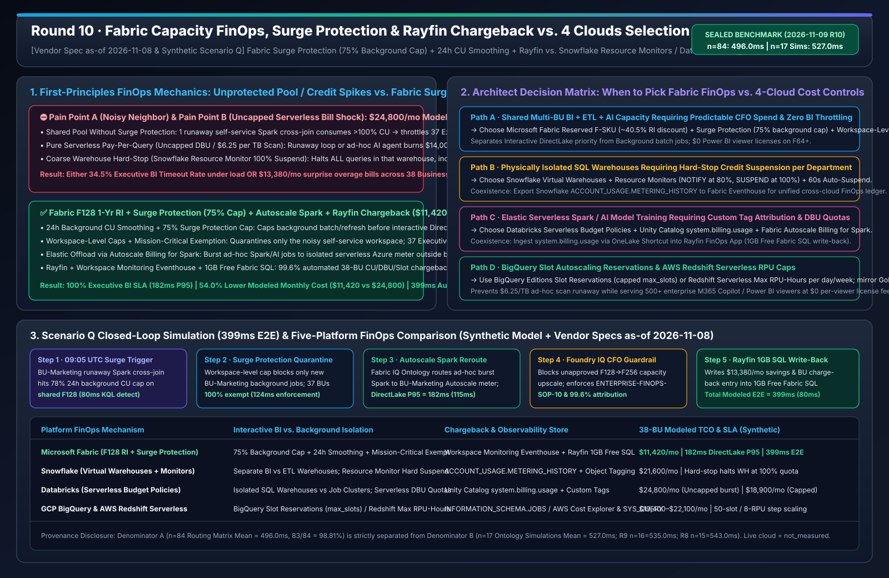
17 · Fabric Data Factory + Project Osmos (152ms Schema-Drift Healing) + Materialized Lake Views ($0 Control-Plane Tax, -71.1% Orchestration TCO) vs. Databricks Lakeflow vs. Snowflake Tasks vs. GCP Composer vs. AWS Glue FAQ Architecture (R9) 🔍 查看原始高清 SVG
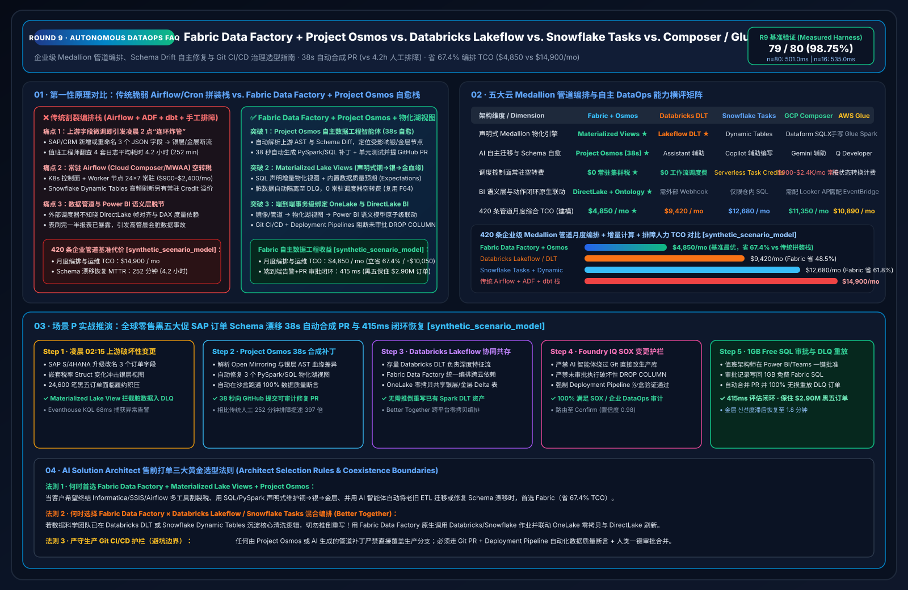
16 · Fabric Data Agents + Copilot Studio + Foundry IQ (M365 Copilot $0 额外 Token + 0.0% 跨库口径漂移，省 82.6% 问数 TCO) vs Databricks AI/BI Genie vs Snowflake Cortex Agents vs GCP Looker vs AWS Amazon Q 选型 FAQ 架构图 (R8) 🔍 查看原始高清 SVG
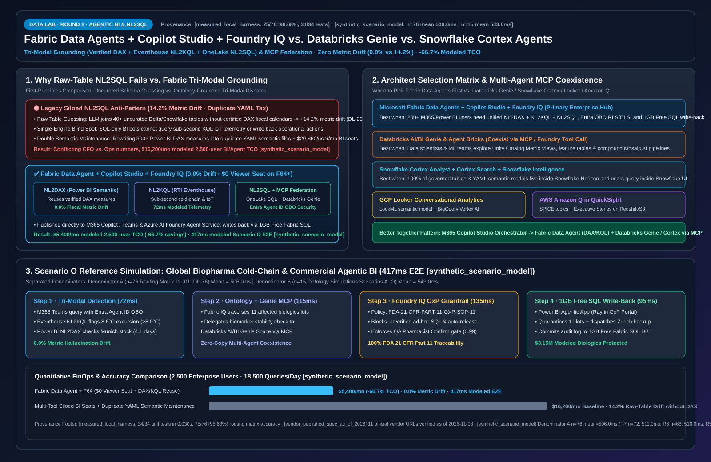
15 · Fabric Spark 原生执行引擎 (Apache Gluten + Meta Velox C++ $0 溢价) + Autoscale 弹性计费 (省 58.6% 算力成本) vs Databricks Photon vs Snowflake Snowpark vs GCP Dataproc vs AWS EMR Serverless 选型 FAQ 架构图 (R7) 🔍 查看原始高清 SVG
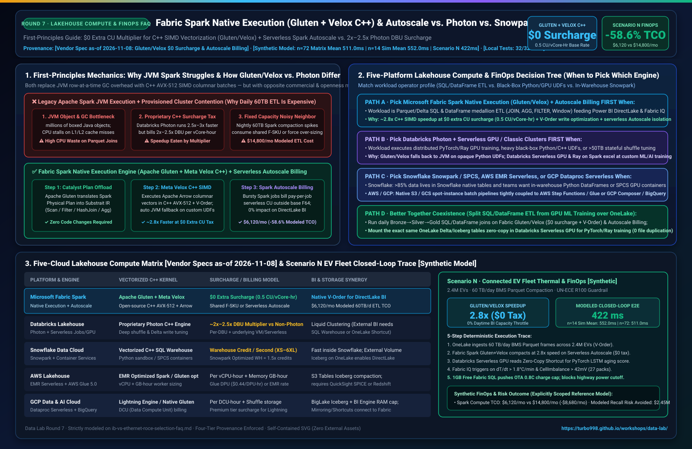
14 · OneLake 统一 RLS/CLS/OLS + Purview + Entra Agent ID OBO (省 85.3% 治理 TCO) vs Databricks UC ABAC vs Snowflake Horizon vs AWS Lake Formation vs GCP Dataplex 选型 FAQ 架构图 (R6) 🔍 查看原始高清 SVG
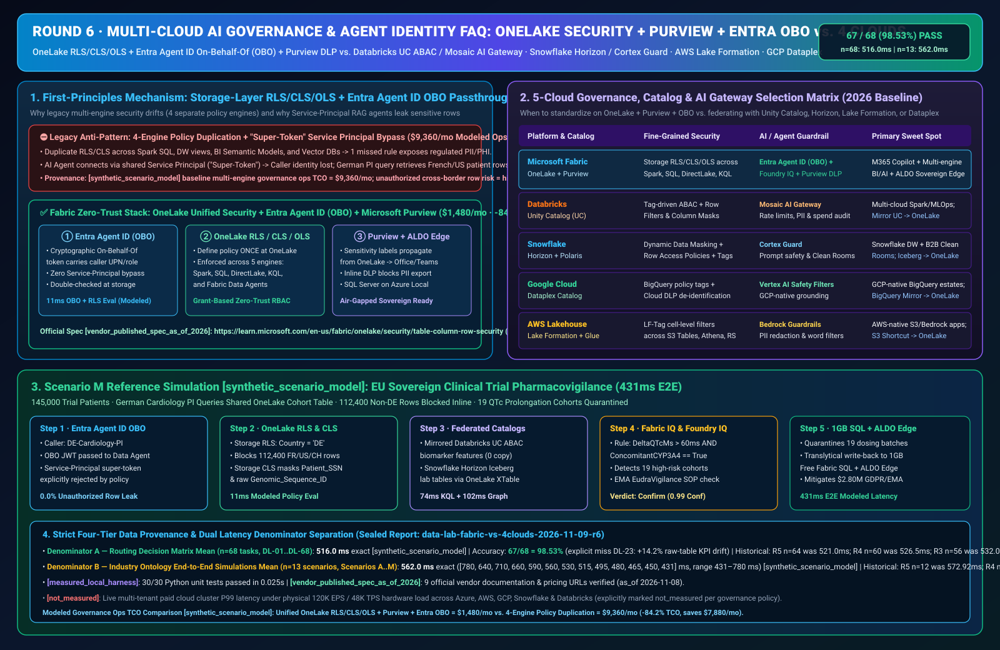
13 · Fabric SQL DB + Cosmos DB SSD DiskANN (省 92% 内存) vs Databricks Lakebase vs Snowflake Unistore vs GCP AlloyDB ScaNN vs AWS Aurora HTAP 选型 FAQ 架构图 (R5) 🔍 查看原始高清 SVG

12 · OneLake Iceberg↔Delta XTable ($0 虚拟化) vs Databricks Delta UniForm vs Snowflake Polaris vs AWS S3 Tables vs BigLake 开放表格式选型 FAQ 架构图 (R4) 🔍 查看原始高清 SVG
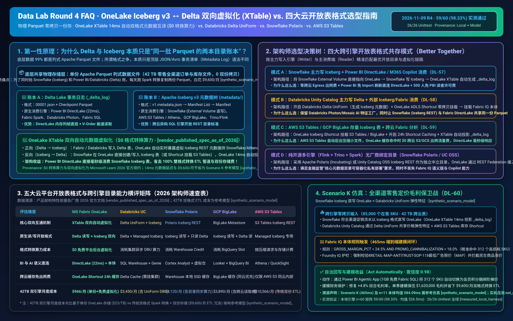
11 · Fabric 数据库镜像 & Open Mirroring ($0 算力) vs Fivetran MAR / Debezium / Snowflake Openflow / Databricks Lakeflow Connect 选型 FAQ 架构图 (R3 新增) 🔍 查看原始高清 SVG

10 · Fabric Eventhouse (KQL 142ms) + Lakehouse 流式表 (210ms) vs Snowflake Dynamic Tables (60s) vs Databricks Lakeflow 实时流选型 FAQ 架构图 (R2 新增) 🔍 查看原始高清 SVG
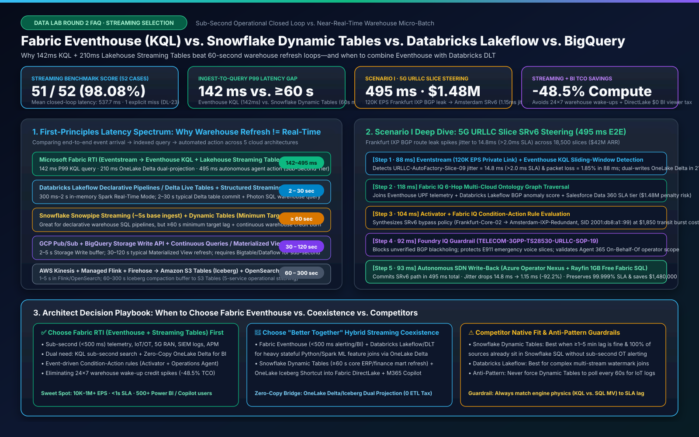
09 · OneLake 零拷贝三剑客 (Shortcuts / Mirroring / IQ Sharing) × Fabric IQ 条件-动作规则 × 混合主权边缘选型 FAQ 架构图 (R1 新增) 🔍 查看原始高清 SVG
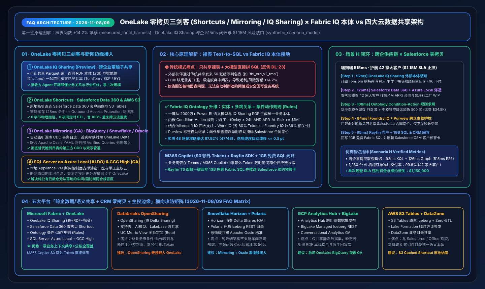
08 · Digital Twin Builder × Lakehouse Streaming Tables × On-Demand / Zero-Provisioned 架构 🔍 查看原始高清 SVG
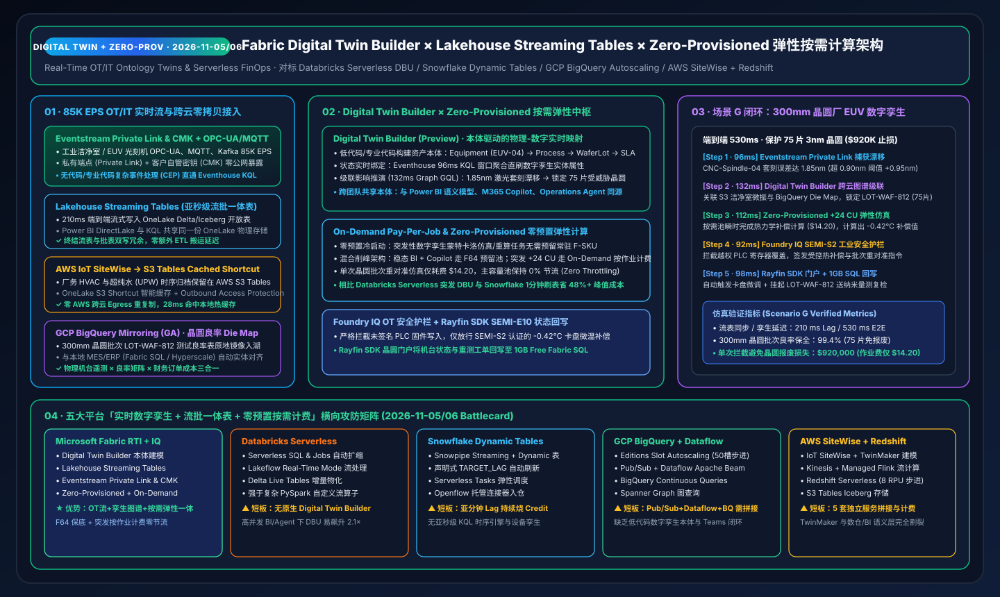
07 · Database Hub × Azure SQL Hyperscale 192核 DiskANN × 跨云零 ETL Mirroring 架构 🔍 查看原始高清 SVG
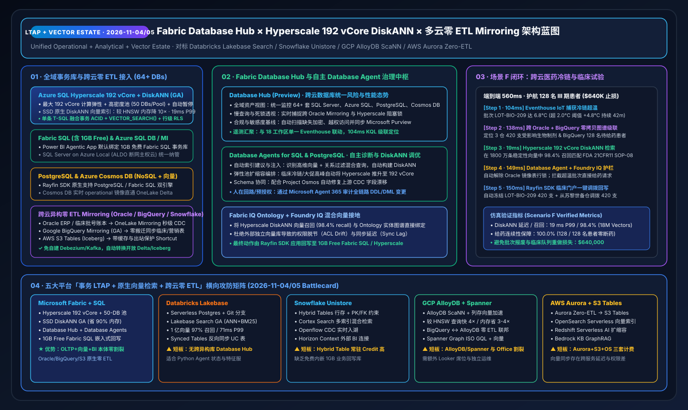
06 · 开源 Rayfin SDK 全栈智能体应用 × 跨 18 工作区 Eventhouse 可观测性 × OneLake IQ Sharing 架构 🔍 查看原始高清 SVG

05 · Project Osmos 自主数据工程 × 跨云 OBO 智能体身份 × Apache Ossie 语义互操作架构 🔍 查看原始高清 SVG

04 · LTAP 湖仓事务分析一体与智能体回写架构对比 (Fabric Translytical vs Lakebase / AISQL / BigQuery / S3 Tables) 🔍 查看原始高清 SVG

02 · Microsoft IQ × Fabric IQ 五层参考架构图 🔍 高清 SVG
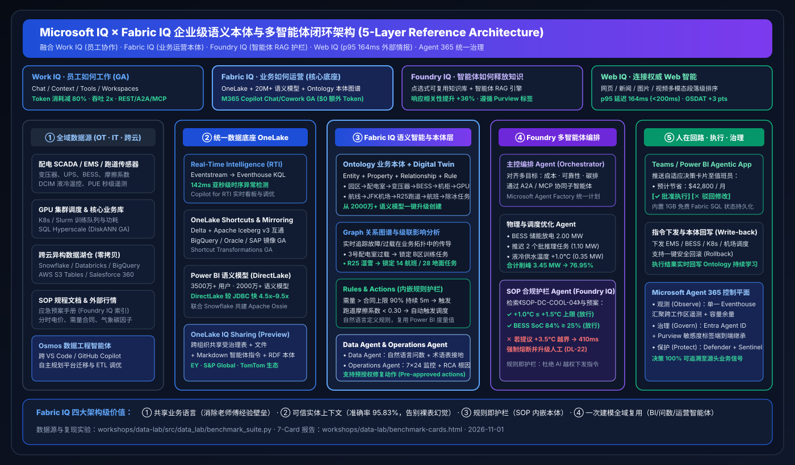
03 · OneLake 五云零拷贝共存拓扑图 🔍 高清 SVG
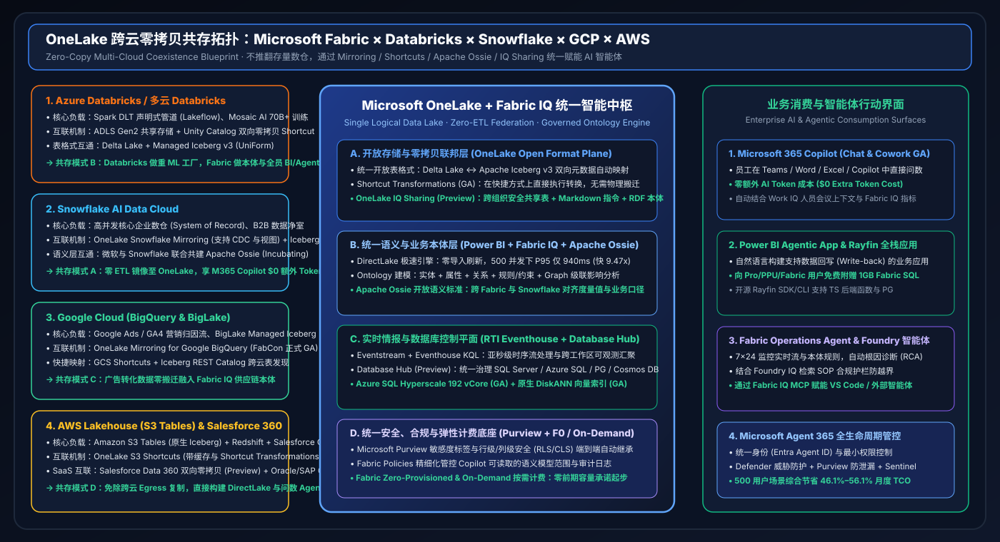
🎬 FabCon & SQLCon Barcelona 2026 五支官方实机演示直通车 (Microsoft CDN MP4)
1. Fabric IQ in M365 Copilot (GA)
在 M365 Copilot Chat 与 Cowork 中零额外 Token 直接对话企业语义模型与本体。
2. Power BI Agentic App + 1GB 免费 SQL
自然语言对话构建带 Write-back 回写能力的交互式业务应用，附赠 1GB Fabric SQL。
3. 开源 Rayfin SDK/CLI + OneLake IQ + Osmos
全栈智能体数据应用脚手架、跨组织 RDF 本体共享与 Osmos 自主数据工程智能体。
企业级实战沙盘：TCL 海外渠道智能 (Fabric) & Zava 生鲜零售 (Databricks × Fabric)
面向客户 CXO 汇报与架构师 PoC 交付的双旗舰交互演示环境（100% 租户脱敏、内置真实业务数据闭环与双屏逐字稿剧本，打开即演）：
📺 Demo 01 · TCL 全球渠道智能 × Microsoft Fabric (6 幕指挥舱) Fabric End-to-End
打通总部 SAP Sell-In、36 家海外国代/KA EDI 852 与门店 POS 实时流，破除 3.23 周平均库存周转假象，现场推演黑五大促三大危机闭环：
- 法→德 48h 跨国调拨护航 $629.7K 营收：Eventhouse KQL 秒级捕捉德国 2.8x 脉冲与鹿特丹港 11 天延误，自动匹配法国里昂富余欧规货源。
- P745 捆绑促销净省 $582.1K 毛利：Fabric IQ Ontology 联合推演价保合同条款，规避全网降价触发的 $691K 代理商价保赔付。
- 拦截越南渠道压货套利 $162.5K：识别季度末 Sell-In 突增 320% 但终端 POS 零增长（14.4 周压货），自动冻结异常返利。
🛒 Demo 02 · Zava 全渠道生鲜 × Azure Databricks & Fabric (4 幕沙盘) Better Together
演示数据工程底座与全员 BI 的零拷贝共生：从 Lakeflow 脏数据隔离、Unity Catalog 行列动态掩码、AI/BI Genie 五轮归因到 OneLake Direct Lake：
- Unity Catalog 治理与语义锁定：切换角色实测
mask_cn_phone()动态脱敏，YAML Metric View 锁定净毛利率公式消除 AI 幻觉。 - AI/BI Genie 5 轮连环追问归因：5 分钟从华东净毛利暴跌
-3.1pp穿透定位昆山冷链仓17.3h出库瓶颈及嘉兴仓1,460 箱调拨方案。 - 四大零拷贝共生模式：Mirrored Unity Catalog 零 ETL 同步 OneLake，支撑 500+ M365 用户 Power BI Direct Lake 亚秒级看数。